A proposal, not ruled. For the driver's brief of 2026-11-24 (row mock-41-creation-fixes), after the impeccable audit of built character creation the same day and Francis's word on it: "fix 2, 1 and 9; merge same-name purchases." The numbers are the audit's own. Each frame is two pictures of the built screen from main (560a0ee; the layout page layout.html?as=new&gear=1, the invented Fen sample; invented names only): left as built, right the same screen with the fix laid over it in the page (rows grouped, words changed, a gap from the tokens). Nothing in the app was changed. The plan is docs/plans/dec-15-creation-audit-fixes.md.
Measured = measured on the built screen by the picture script, before and after. ⚑ = a question for Francis; none is decided here.
A phone (375 px), eleven purchases of five names. Found: eleven rows, one a purchase, their buttons 0 px apart; the burden box a screen down. Proposed: one row a name with its count and its summed price ("Bog sling ×3, 4 gp 5 sp"), one button a row, rows 8 px apart.Measured Buttons 0 px apart as built, 8 px proposed; each 44 px tall, 122 px ("Put back one") or 91 px ("Put back") wide. The page is 232 px shorter (1,545 to 1,313). The coin line, the burden and the foot's "11 things bought" do not change: the merge is in how the rows are shown.⚑ Words Drawn: "Put back one" on a row of several (the Tapped table's own words, 06), "Put back" on a row of one. As built the button says the refund ("Put back for 1 gp"). ⚑ Order Drawn in the order each name was first bought.
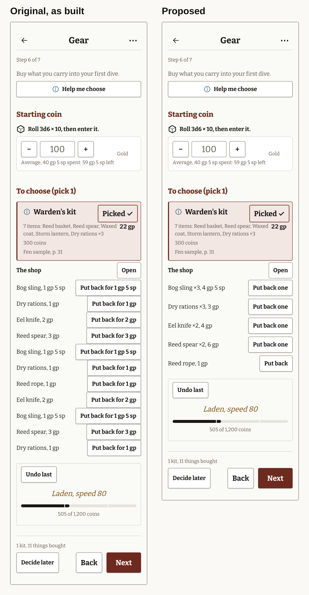
A tablet held sideways (1180 by 820). The same merge; rows 8 px apart.The buttons stay at the far end of the row, as built: that is the audit's finding 13, not picked.
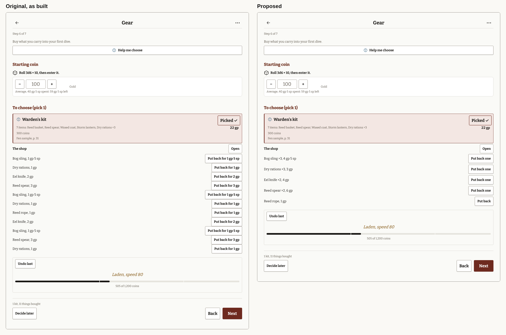
A long item name, a phone. The name wraps to two lines and its button drops under it, 8 px below, at the left: as built, and unchanged by the merge.The Fen sample has no long item name: "Eel knife" was renamed in the page for this frame, on both sides. Measured the words 343 px wide on two lines, the button 8 px under them.
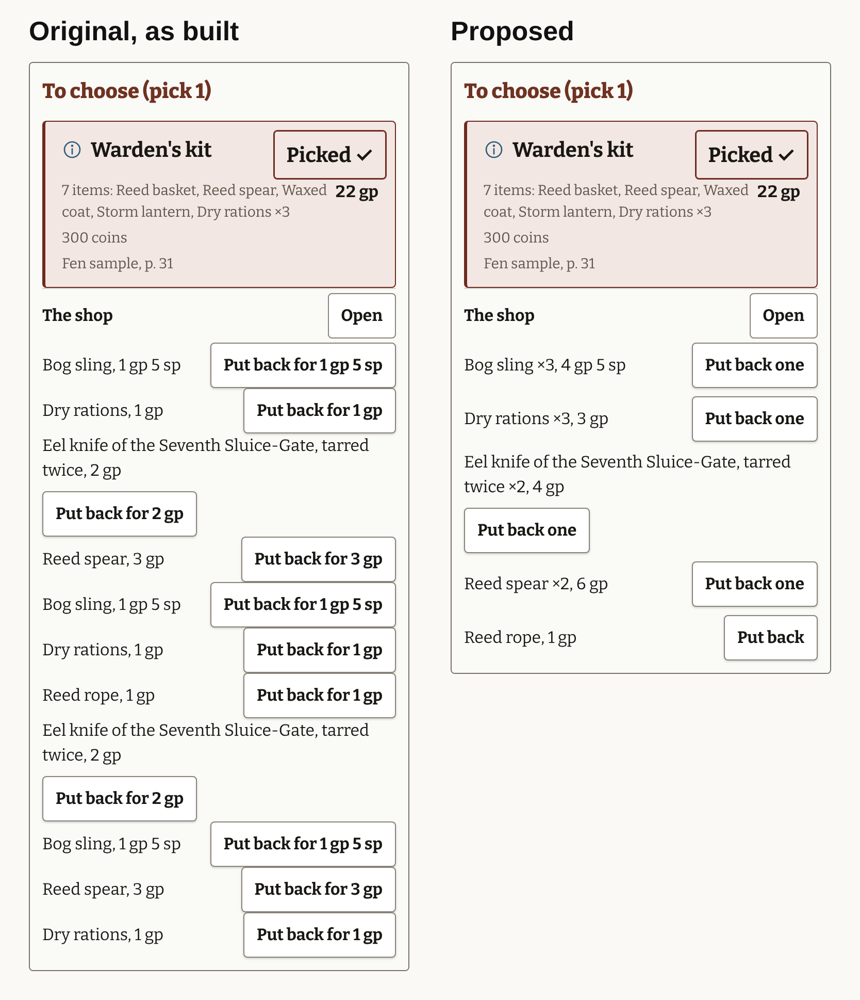
The review's "Bought" line, a phone. Found: every purchase named again, beside a kit that says "×3". Proposed: each name once with its count.
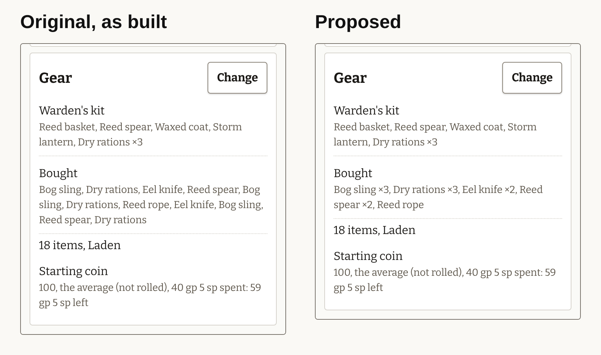
The same on a tablet held sideways.
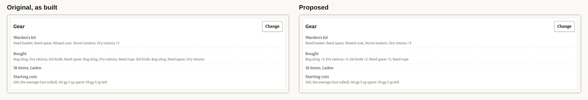
How a merge is stored (read from the code, src/app/StartingGear.tsx). A purchase at creation is already a real thing in the pack, and the character's creation record keeps one entry a purchase (its name, its price, the pack line it made). So the rows can be merged for display only: nothing stored changes, no migration, and hard rule 4's exception 8 is not touched. What stays as it is: two Bog slings are still two lines in the pack; rations already join one stack there (the stacks ruling), as today. ⚑ Data One case is not display-only: a purchase made as several at once in the shop's form ("Dry rations ×3") is one entry with one price, and as built it goes back whole. "Put back one" on it would have to split a stored entry. Not drawn; see the plan's ⚑ 1.
Found: 999, 0, letters and 3.5 are each answered "Muscle is missing" while the value sits in the box; the box takes letters; nothing marks it for a screen reader. (17 is already answered "Muscle must be 2–16": the range is the Fen sample's own.) Proposed: the box takes digits only; a number outside the setting's range is answered with the range, read from the setting ("Muscle must be 2 to 16" here); the box is marked invalid for a screen reader (aria-invalid, nothing to see). A phone, light.⚑ Words Drawn in the brief's form, "Muscle must be 2 to 16". The voice guide's pattern for an error is "What happened. What to do." ("Muscle can't be above 16. Lower it to continue."). As built the range has a dash ("2–16"); drawn "2 to 16", as the Tapped table writes a range. ⚑ A setting that gives no range (no scores rule and no modifier table): the app has no numbers of its own to name, so what 999 says there is open; not drawn.
999. The box keeps what was typed; the foot names the range.
0.
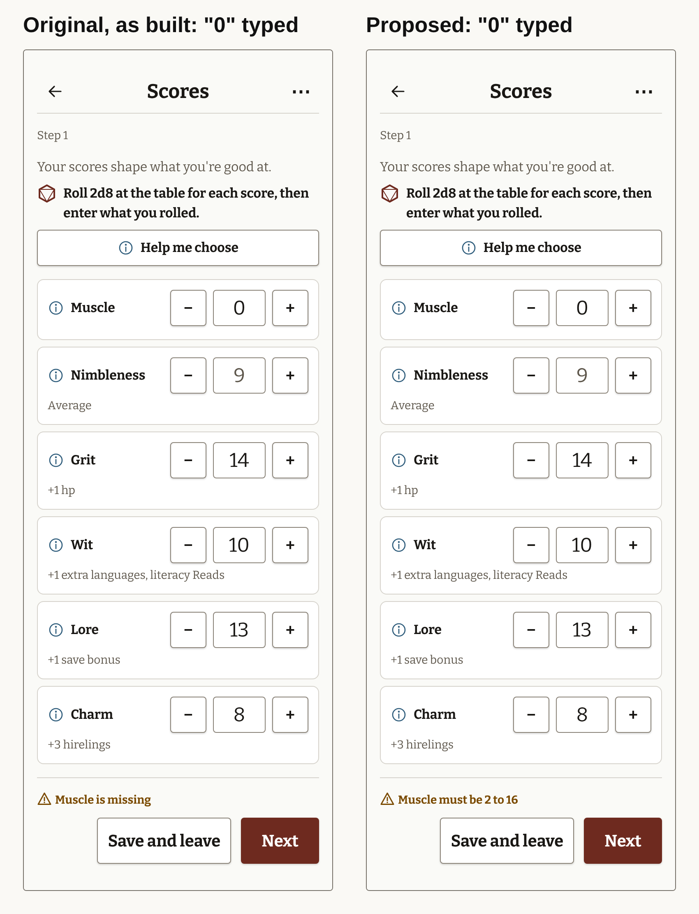
Letters. Nothing enters the box, so it stays empty with its "type" hint, and "Muscle is missing" is then true.A refused key or a pasted word leaves the box as it was; nothing says why (critique 2).
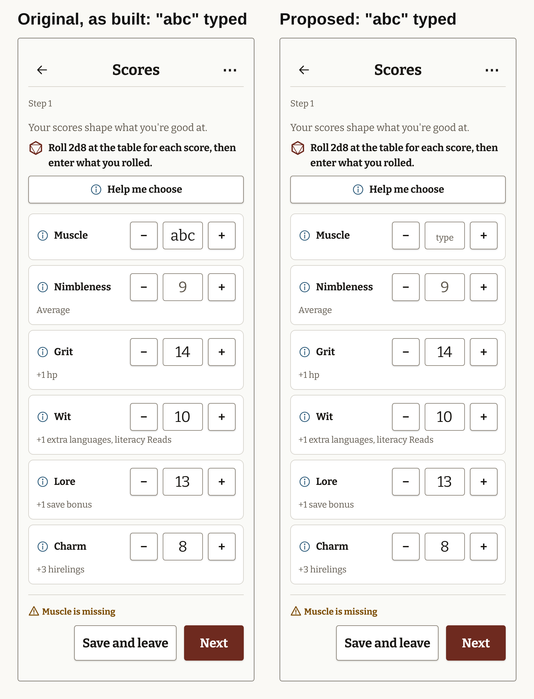
3.5. The point is not a digit, so the box holds "35", and the foot answers that number.This is what a digits-only box really does with "3.5" (critique 3).
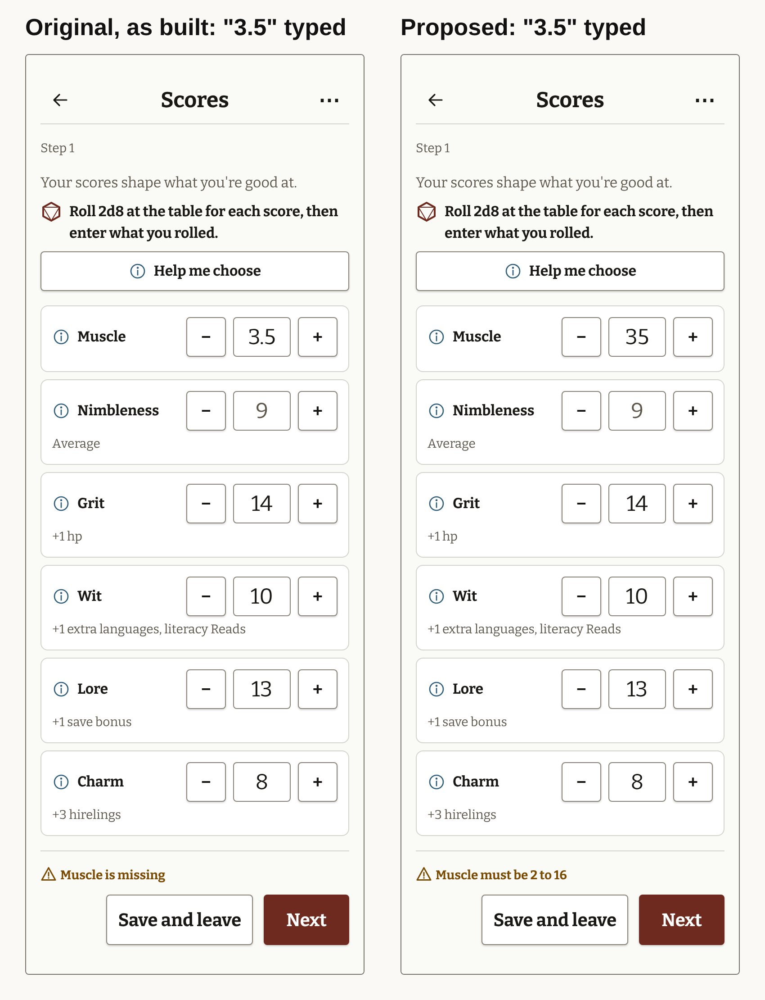
A phone, light: one score left at the average. Found: Nimbleness was never touched (the tile showed 9, "Average"; the Bog folk add 1), yet the review reads "Nimbleness 10 (rolled 9)" and then "Nimbleness 10: the average, not rolled". Proposed: an untouched score carries no "(rolled N)"; the second line says it was not rolled, once."Grit 13 (rolled 14)" stays: Grit was rolled, and the kindred lowered it.
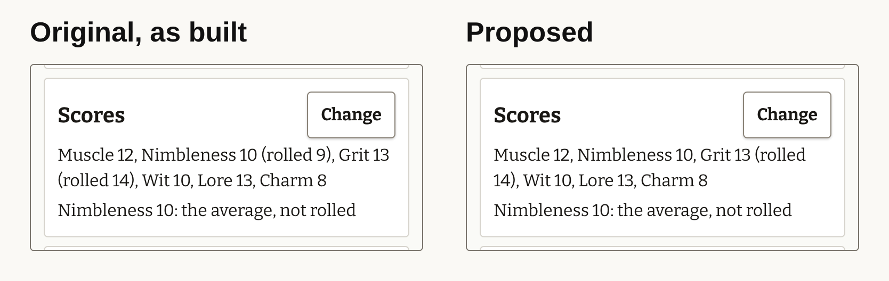
The same in dark.
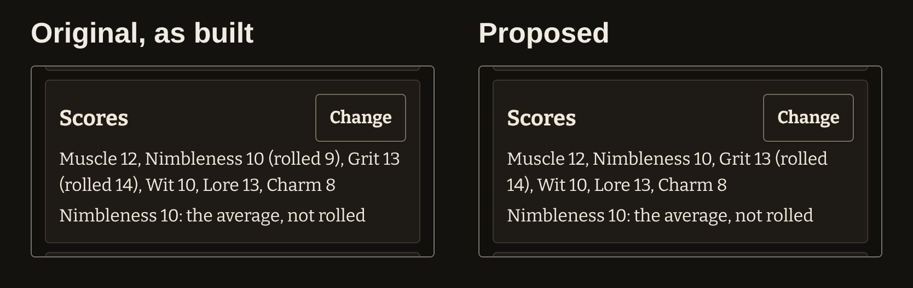
⚑ Words The second line's figure. "Nimbleness 10: the average" gives the score after the kindred's +1; the average was 9. Left: as proposed above (the built line kept). Right: the line without a figure.
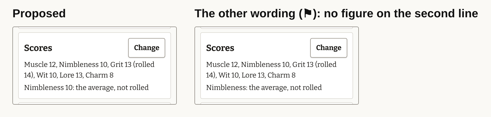
No score rolled at all. As built two scores read "(rolled 9)" though none was rolled; proposed, none does.The full list is then said twice (critique 8). Every score rolled: the second line is absent, as built; not drawn.
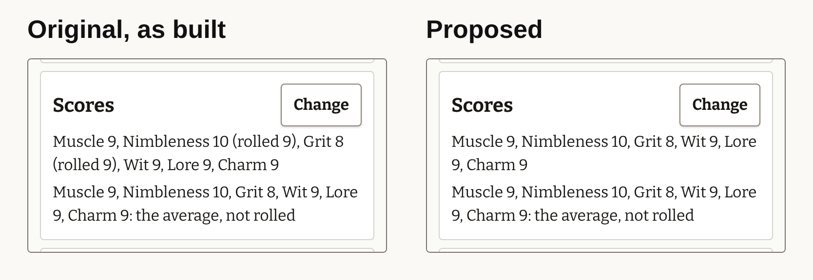
A second place, not drawn: the GM's approval card lists the same scores with "rolled N" and the same "the average, not rolled" line (src/app/reviewSections.ts). The audit did not reach it; the plan says how it is handled.
impeccable critique, of this page's proposed frames)The skill here is a condensed port without its tooling, read from its file: no detector or linter ran; this is a read of the pictures above. It changes nothing: Francis picks by number. Surface: an app screen used at the table (the skill's "Operate" mode: scanning and consistency over expression).
| Heuristic | 0 to 4 | Why |
|---|---|---|
| Visibility of system status | 3 | The burden box comes back within a screen of the list; the count on a row says what is held. |
| Match to the user's language | 3 | "Must be 2 to 16" names the problem; "×3" is the kit's own form. The review's average line can still give a figure the player never saw as an average (9). |
| User control and freedom | 3 | One back at a time, and Undo last stays. Putting back a whole row of three takes three taps. |
| Consistency | 2 | Two button wordings in one list; the refund leaves the button; the long row's button sits left where the others sit right. |
| Error prevention | 3 | Letters can no longer enter; rows 8 px apart. "3.5" becomes "35" without a word. |
| Recognition over recall | 3 | A merged row no longer shows the price of one. |
| Flexibility and efficiency | 3 | Five rows to scan in place of eleven. |
| Minimalist design | 3 | Less on every frame; with no score rolled the review still says the list twice. |
| Error recovery | 2 | The range is named, but at the foot, away from the box, and without the way forward; the box shows no sign. |
| Help and documentation | 3 | Unchanged: the ⓘ on each score, Help me choose. |
| Total | 28 of 40 |
What works. Each fix removes something and adds no new part, colour or size: eleven rows become five, a false "rolled 9" goes, a wrong word ("missing") becomes the true one. The merged row borrows forms the screen already has (the kit's "×3", the Tapped table's "Put back one"). Cognitive load and hierarchy: lighter on Gear, where the burden and the coin are again near what was bought; unchanged on Scores and the review. The screens suit their mode: read once, at the table, between rolls.
clarify)harden)harden)clarify)clarify)clarify)layout)distill)clarify)layout)harden)Walked as: a first-time player on a phone (types 3.5 or a letter on Scores: 2 and 3 above; finds the foot's line only after scrolling: 1); a player at the table who bought too much (five rows, the burden in sight; taps "Put back one" three times: fine); a keyboard or screen-reader user (the invalid box is announced; the merged row's button needs a spoken name that carries the item and the refund, in the plan; not tested with a reader). Questions for Francis: the button's words (5); "3.5" (3); the refusal's words (4); the second line's figure (9).
Checked, measured on the built screen before and after: the bought rows' buttons 0 px apart as built, 8 px proposed, at 375 and at 1180 px; every proposed button 44 px tall and 91 px or wider; the long name's button 8 px under its words; no sideways scroll at 375 px (the built page's own layout, unchanged). The fixes use the tokens only (--space-2 for the gap); no new colour, size or part, so contrast is as the audit measured it (nothing under 4.5 to 1). Nothing under 14 px. No disabled button, no new accent button, no confirm: a put-back happens at once, as built. Messy data: 999, 0, letters and 3.5 on Scores; eleven purchases and a long item name on Gear; one, and all six, scores not rolled on the review. Words: no middle dot, sentence case, numerals, buttons start with a verb.
Not checked or not drawn. Dark, except the review's Scores card. Larger text. Loading, offline and error states (no fix changes them). A purchase made as several at once (⚑ data). A count of 99 or more on a row. A setting with no range for its scores. The GM's approval card. The tablet held upright. The Adjust step and the Starting coin box, which use the same number box: whether digits-only reaches them is in the plan. The toast after "Put back one". Not tested with a screen reader or on a real device. These are pictures of the built screen with changes laid over it in the page, not hand-drawn frames, so the page has no dark column; the long item name was written into the page, since the sample has none.